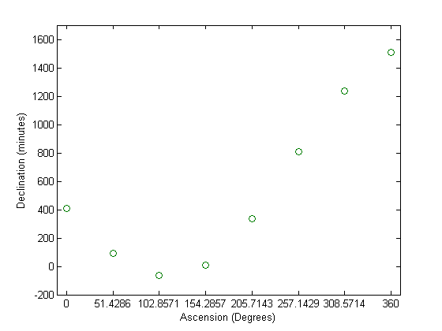

% Yeukhon Wong % Homework #5 Problem #2 % Modify CSInterp so it uses FFT. % Script File: Pallas % Plots the trigonometric interpolant of the Gauss Pallas data. A = linspace(0,360,8)'; D = [ 408 89 -66 10 338 807 1238 1511]'; Avals = linspace(0,360,200)'; F = CSInterp(D(1:8)); Fvals = CSeval(F,360,Avals); plot(Avals,Fvals,A,D,'o'); axis([-10 370 -200 1700]); set(gca,'xTick',linspace(0,360,8)); xlabel('Ascension (Degrees)'); ylabel('Declination (minutes)');
Warning: Imaginary parts of complex X and/or Y arguments ignored